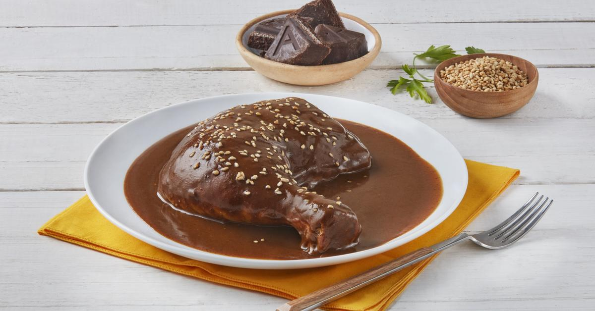

Chicken mole

Mole de pollo is one of Mexico's most iconic traditional dishes. It's a rich, deeply
flavorful sauce made by blending chiles, spices, nuts, seeds, chocolate, and tomatoes,
then simmering it until thick and velvety. The sauce is served over tender pieces of chicken,
usually accompanied by rice and warm tortillas
Ingredients
- 4/6 chicken pieces (thighs or breasts)
- 1/2 onion
- 2 garlic cloves
- Salt (to taste)
- 3/4 dried chiles guajillo
- 2 dried chiles ancho
- 2 tomatoes
- 2 garlic cloves
- 1/2 tablespoons sesame seeds
- 1 tablespoon peanuts or almonds
- 1 cinnamon stick or 1/2 teaspoon ground cinnamon
Steps
- Cook the chicken: Place the chicken pieces in a pot and cover with
water. Add onion, garlic, and a pinch of salt. Bring to a boil, then
simmer for 20–25 minutes until the chicken is fully cooked and tender.
Remove the chicken and set aside, reserving the broth.
- Prepare the mole base: Toast the dried chiles (ancho, guajillo, and
pasilla) lightly in a skillet until fragrant, about 20–30 seconds per
side. Remove the seeds and soak the chiles in hot water for 10 minutes
to soften. In the same skillet, lightly toast the sesame seeds, nuts,
tortilla or bread piece, onion, garlic, and tomatoes until browned.
- lend and simmer: Add the softened chiles and toasted ingredients to a
blender along with a cup of the reserved chicken broth. Blend until
smooth. Heat a little oil in a pot and pour in the mole mixture. Add
the chocolate and a bit more broth as needed. Simmer for 10–15 minutes,
stirring occasionally until the sauce thickens and the flavors combine.
- Combine and serve: Add the cooked chicken pieces into the simmering
mole and coat them well with the sauce. Cook together for 5 minutes to
absorb the flavor. Serve hot with rice and warm tortillas, and sprinkle
sesame seeds on top if desired.
home